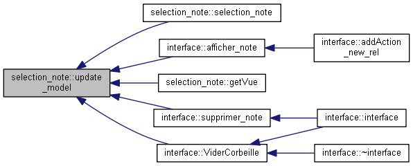

Inheritance diagram for selection_note:

Collaboration diagram for selection_note:
Public Slots | |
| void | emit_selection (QModelIndex i) |
| Identifie la note/versions que l'utilisateur souhaité affiché More... | |
| void | update_model () |
| Etablie/Met à jours le model contennant tous les Notes actif. More... | |
Signals | |
| void | selection (QString, int) |
Public Member Functions | |
| selection_note () | |
| constructeur du dock de selection de note | |
| QStandardItemModel * | getModel () const |
| Accesseur de l'attribut model. More... | |
| QTreeView * | getVue () |
| Accesseur de l'attribut vue. More... | |
Detailed Description
Definition at line 52 of file interface.h.
Member Function Documentation
◆ emit_selection
|
slot |
Identifie la note/versions que l'utilisateur souhaité affiché
Si on choisit de cliquer sur l'id, d'une note on envoie les paramètre de façon à obtenir la dernière versions. Sinon on envoie les coordonnées de la version sellectionner
- Parameters
-
i
Definition at line 381 of file interface.cpp.
Here is the caller graph for this function:
◆ getModel()
|
inline |
Accesseur de l'attribut model.
- Returns
- QStandardItemModel
Definition at line 65 of file interface.h.
Here is the caller graph for this function:
◆ getVue()
|
inline |
Accesseur de l'attribut vue.
- Returns
- QTreeView*
Definition at line 71 of file interface.h.
Here is the call graph for this function:
◆ update_model
|
slot |
Etablie/Met à jours le model contennant tous les Notes actif.
les notes affichées sont les notes actifs (non supprimées, non archivées) en effectuant une requete au près du Note Manager
Definition at line 339 of file interface.cpp.
Here is the call graph for this function:
Here is the caller graph for this function:

The documentation for this class was generated from the following files:
- OL13/interface.h
- OL13/interface.cpp